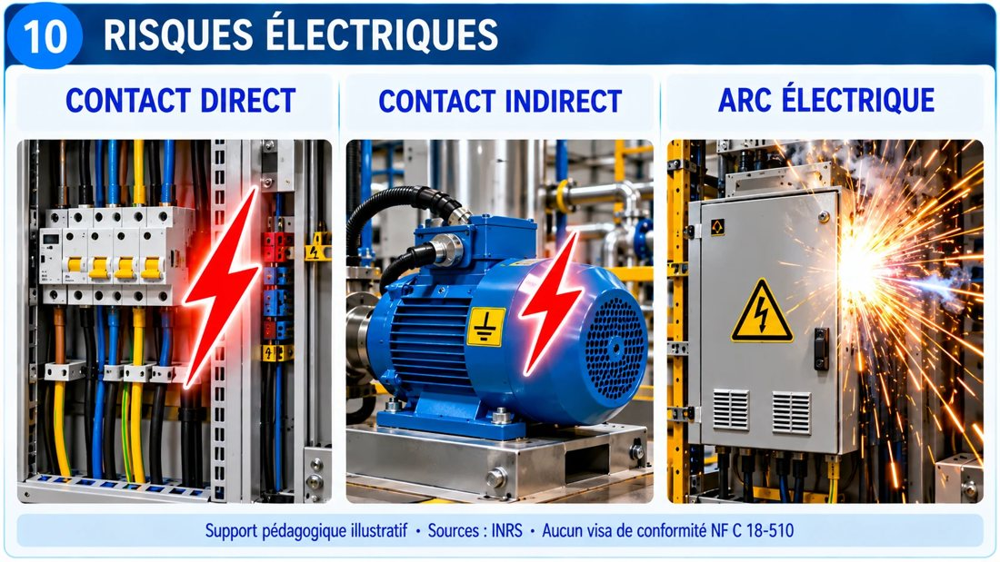
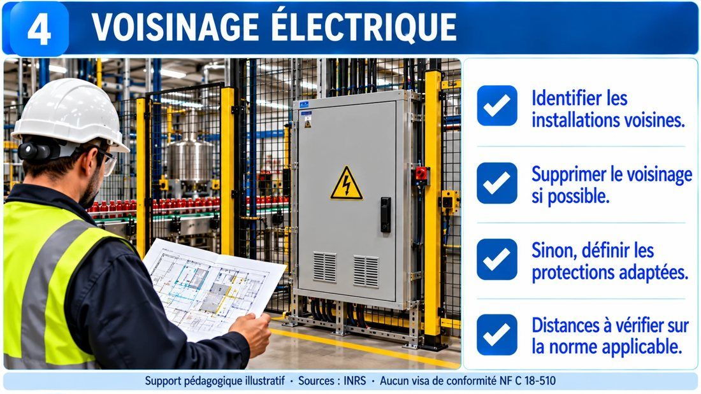
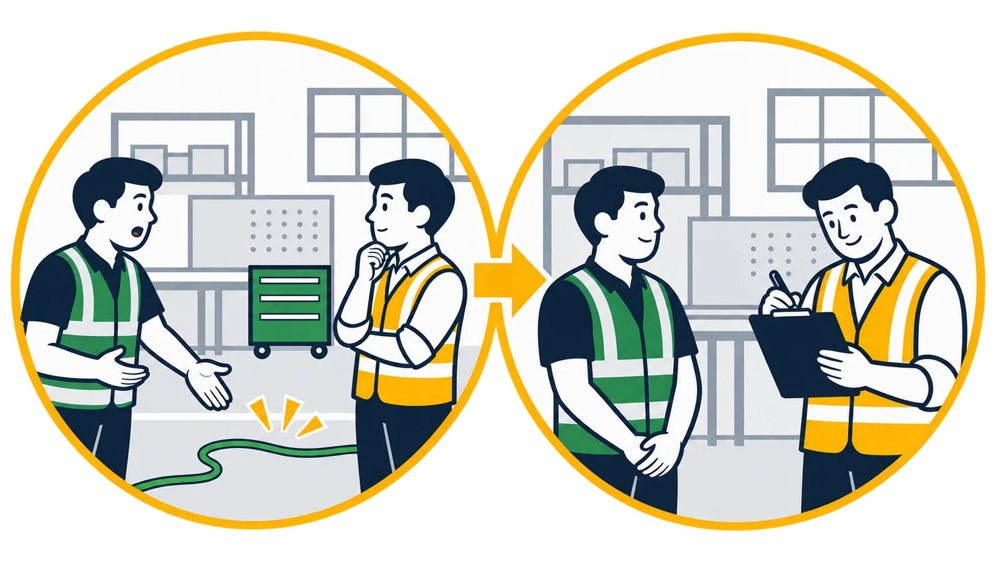
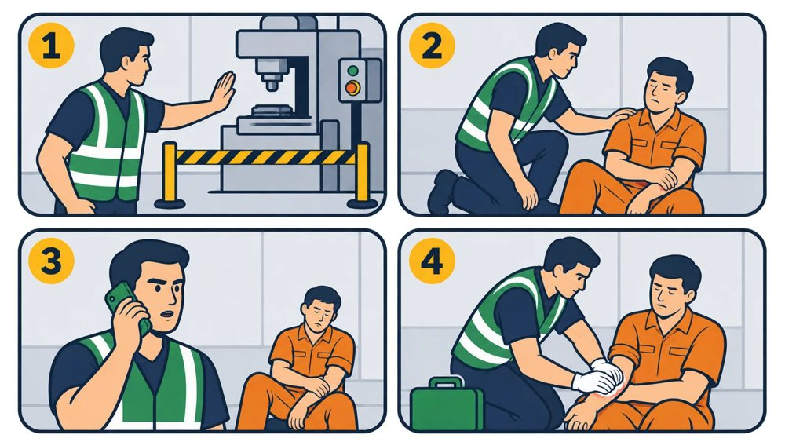
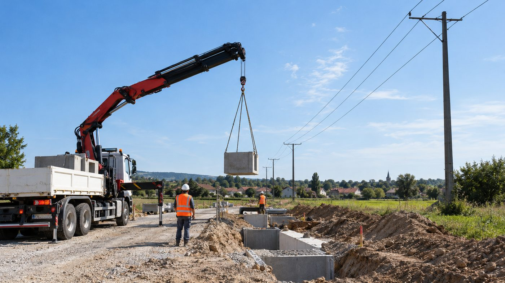
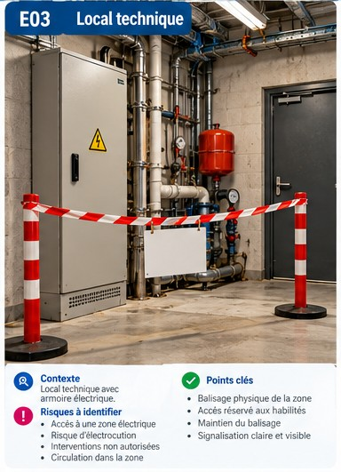
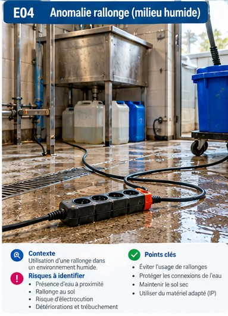
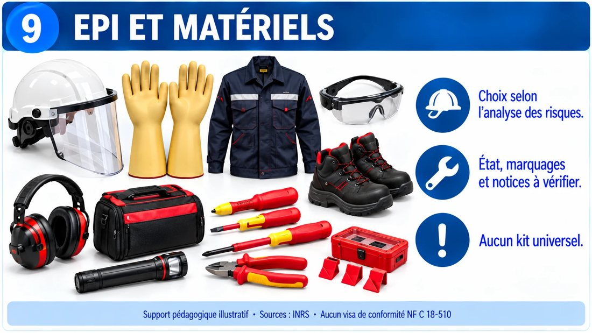
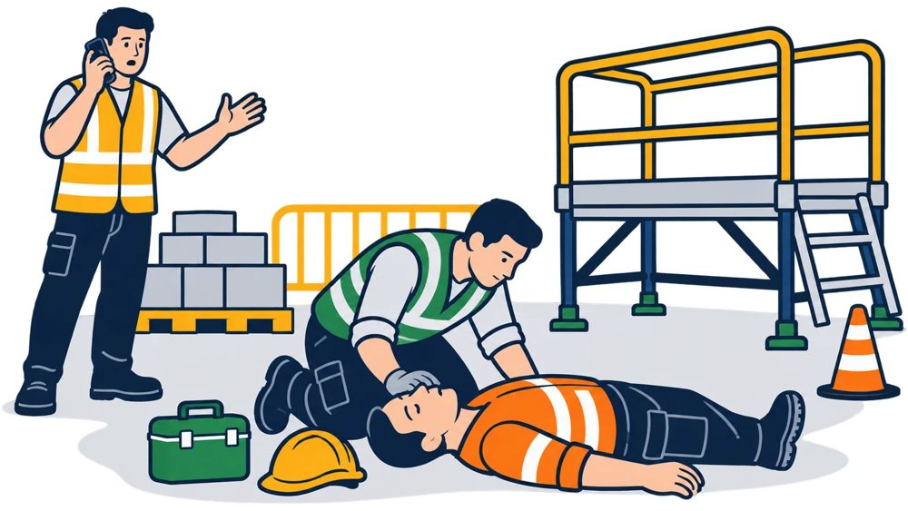

Consul Team · Habilitation électrique · session 260535A
B0 · H0(V)Travailler près de l’électricité, sans se mettre en danger
Une journée pour comprendre le danger électrique, lire un symbole et un titre d’habilitation, situer les zones, savoir ce que l’on fait… et surtout ce que l’on ne fait jamais.
- Lundi 16 novembre 2026
- 8 h 30 – 16 h 30
- Consul Team · Six-Fours-les-Plages
- Inter-entreprises · présentiel
Votre journée en quatre temps

Comprendre le dangerContact direct, contact indirect, arc, humidité : comment l’électricité blesse.Séquences 1 et 2
Lire les zonesTensions, voisinage, distances : où l’on peut aller, où l’on ne va pas.Séquence 3
Savoir ce que l’on faitB0, H0, H0V : exécutant, chargé de chantier, et ce que l’on ne fait jamais.Séquences 4 et 5
Réagir en cas d’accidentProtéger, examiner, alerter, secourir : dans cet ordre, sans devenir une seconde victime.Fiche réflexeLes quatre mots à retenir
En cas d’accident électrique
- Protégercouper l’énergie, baliser
- Examinerconscience, respiration
- Alerter15 · 18 · 112
- Secourirjusqu’à l’arrivée des secours
Ce que vous allez voir

Engin près d’une ligne aérienne
Local technique
Milieu humide
EPI et matériels
Un accident de chantier Extincteurs et feux
Extincteurs et feux
La journée, heure par heure
- 8 h 30Accueil
- 8 h 45Cadre et titre
- 9 h 30Dangers et secours
- 10 h 30Tensions et zones
- 11 h 45Protections
- 13 h 00B0 · H0 · H0V
- 14 h 00BR et BC
- 14 h 40Évaluation
- 16 h 00Bilan
Pour aller plus loin
Parcours en 7 séquencesLe déroulé complet, avec schémas et questions à traiter à l’oralRepères : accident, alerte, incendieConduite à tenir, alerte, feu d’origine électrique, humiditéCours completLe cours illustré, avec ses questions d’entraînementÉvaluation théorique30 questions, correction immédiate
Cadre. Le titre d’habilitation est délivré par l’employeur, pour des opérations précises, après un avis établi à l’issue de la formation. Ce support ne le remplace pas.
La session réunit des stagiaires de plusieurs entreprises : les situations proposées sont génériques. Vos installations, vos prescriptions et vos procédures se précisent auprès de votre employeur. Aucune donnée nominative n’est publiée ici.